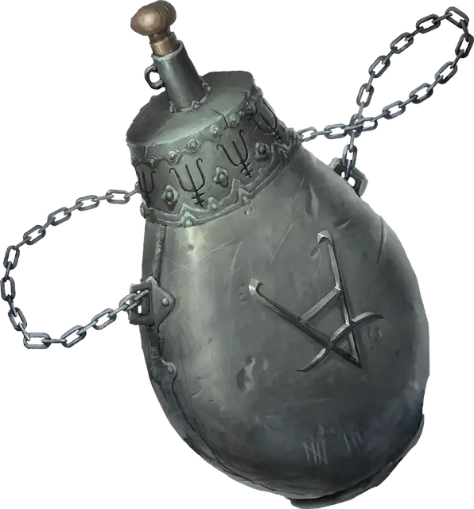

Железная фляга
Iron Flask
Чудесный предмет, легендарный

Рекомендованная стоимость от 50 001 зм
У этой железной бутылки латунная пробка. Вы можете действием произнести командное слово фляги и выбрать целью существо, которое видите в пределах 60 футов от себя. Если цель родом не с того плана существования, на котором вы находитесь, она должна преуспеть в спасброске Мудрости Сл 17, иначе будет заточена во фляге. Если цель раньше уже была заточена такой флягой, спасбросок она совершает с преимуществом. Заточённое существо остаётся во фляге, пока не будет выпущено. Во фляге может одновременно находиться только одно существо. Заточённое существо не обязано ни дышать, ни есть, ни спать, и оно не стареет.
Вы можете действием вынуть пробку фляги и выпустить существо, находящееся в ней. Оно будет дружественно относиться к вам и вашим спутникам в течение 1 часа и повинуется вашим командам в течение этого времени. Если вы не отдаёте ему команд или отдаёте команду, которая весьма вероятно закончится его смертью, оно будет обороняться, но не будет совершать других действий. В конце этого периода существо действует согласно своему обычному характеру и мировоззрению.
Заклинание опознание [identify] показывает, находится ли во фляге существо, но единственный способ определить вид существа это вскрытие фляги. В найденной фляге уже может находиться существо, определённое Мастером самостоятельно или случайным образом.